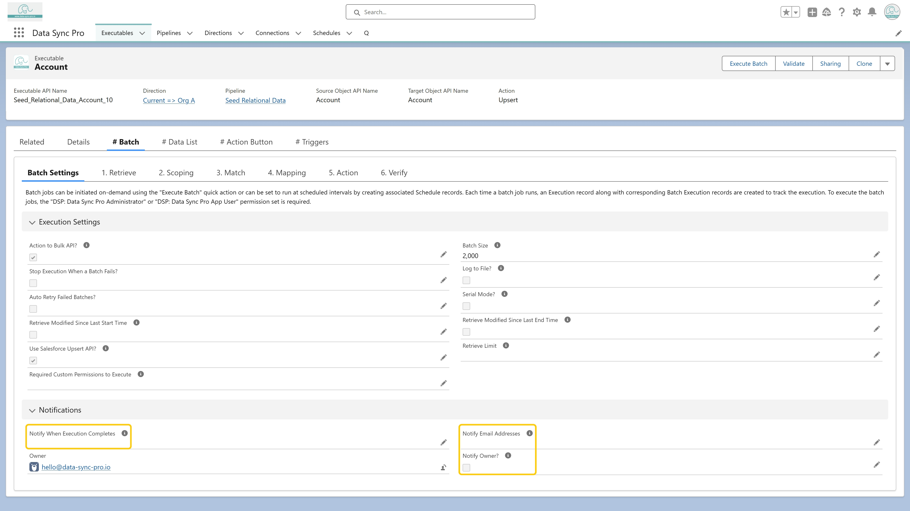

<p>
  Set the <strong>"Notify When Execution Completes"</strong> field to 
  <em>"Always"</em> or <em>"Only If Failed"</em> to specify when notifications 
  should be sent. Then, choose recipients by enabling <strong>"Notify Owner"</strong> 
  to notify the record owner, entering comma-separated email addresses in the 
  <strong>"Notify Email Addresses"</strong> field, or configuring both options together.
</p>

